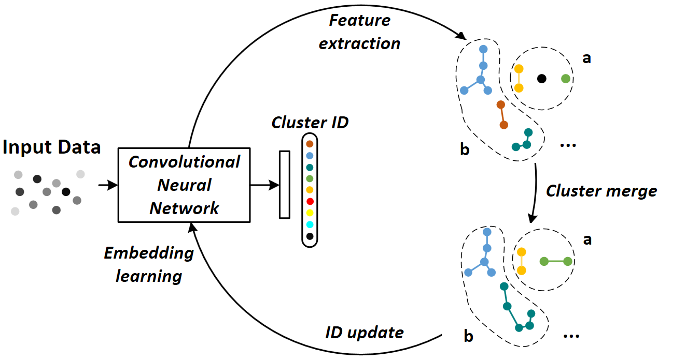

|  |
Guodong Ding1, Salman Khan2, Zhenming Tang1, Jian Zhang3 and Fatih Porikli2
1Nanjing Univerisity of Science and Technology, 2Australian National University, 3University of Technology Sydney
Person re-identification aims to establish the correct identity correspondences of a person moving through a non-overlapping multi-camera installation. Recent advances based on deep learning models for this task mainly focus on supervised learning scenarios where accurate annotations are assumed to be available for each setup. Annotating large scale datasets for person re-identification is demanding and burdensome, which renders the deployment of such supervised approaches to real-world applications infeasible. Therefore, it is necessary to train models without explicit supervision in an autonomous manner.
In this paper, we propose an elegant and practical clustering approach for unsupervised person re-identification GD{based on the cluster validity consideration. Concretely,} we explore a fundamental concept in statistics, namely emph{dispersion}, to achieve a robust clustering criterion. Dispersion reflects the compactness of a cluster when employed at the intra-cluster level and reveals the separation when measured at the inter-cluster level. With this insight, we design a novel Dispersion-based Clustering (DBC) approach which can discover the underlying patterns in data. This approach considers a wider context of sample-level pairwise relationships to achieve a robust cluster affinity assessment which handles the complications may arise due to prevalent imbalanced data distributions. Additionally, our solution can automatically prioritize standalone data points and prevents inferior clustering.
Our extensive experimental analysis on image and video re-identification benchmarks demonstrate that our method outperforms the state-of-the-art unsupervised methods by a significant margin.
Files: [journal]|[conference]|[poster]
Code: [code]
Citation:
@article{ding2019towards,
title={Towards better Validity: Dispersion based Clustering for Unsupervised Person Re-identification},
author={Ding, Guodong and Khan, Salman and Tang, Zhenmin and Zhang, Jian and Porikli, Fatih},
journal={arXiv preprint arXiv:1906.01308},
year={2019},
}
@inproceedings{ding2019dispersion,
title={Dispersion based Clustering for Unsupervised Person Re-identification},
author={Ding, Guodong and Khan, Salman and Tang, Zhenmin},
journal={30th British Machine Vision Conference},
year={2019},
}